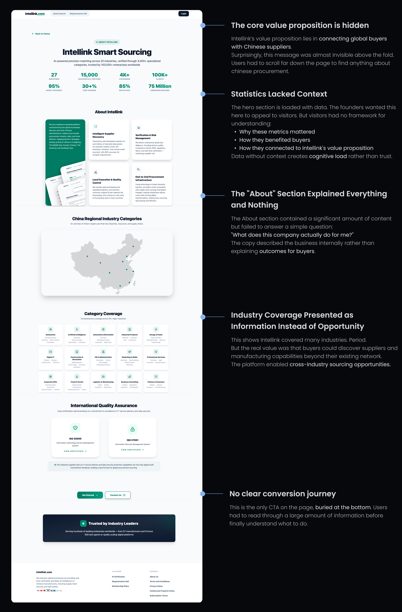
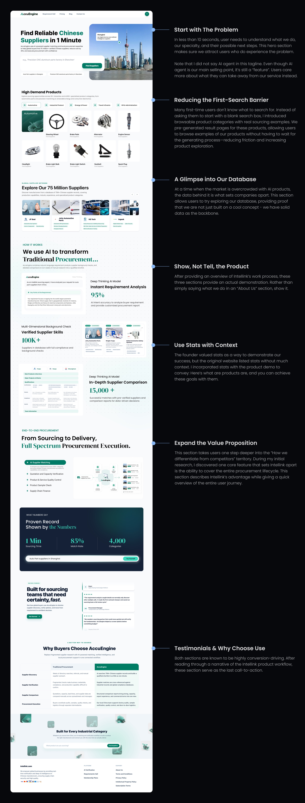
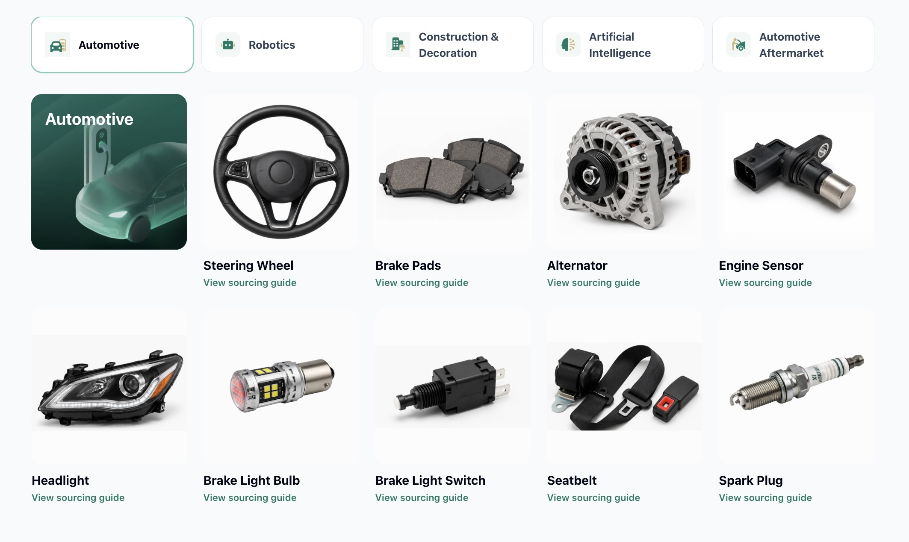

Designing a Search-to-Conversion Funnel
Redesigning an AI Procurement Landing Page to Improve Conversion and Clarify Product Positioning
- GEO / SEO Strategy
- Conversion Optimization
- AI Product
- Full Stack Design + Dev
The ads brought people in.
The page needed to carry them forward.
AccuEngine is an international AI-powered procurement site that connects global buyers with suppliers.
AI was the sole designer and developer.
The founders asked AI to create an international website in a short amount of time. With limited guidance along the way, the site launched without a defined product strategy or a process for understanding users. They ran Google SEO and the result wasn't great. The click-through rate was pretty high, but the conversion rate was low, indicating friction after the initial interest.
Ad click-through rate
Before redesign · Interest in the promise.Website conversion rate
Before redesign · Friction after the click.Redesign the landing page to improve Upper and Mid-Funnel conversion

Let’s break apart
the current website!
Before rearranging the interface, I looked at the story it was telling and the questions it left unanswered. Research and testing helped me examine the experience beyond its appearance, with attention to whether a buyer could understand the value and move forward.
The page contained lots of information, but not an engaging narrative.
Users were exposed to sections about maps, industries, statistics, and company information without understanding how those pieces connected. As a result, visitors never reached a clear answer to three critical questions:
- What does AccuEngine do?
- Why is it different?
- What should I do next?

Here’s how I put
it back together:
I shaped the experience around the buyer’s next question. The page needed to explain the product, make its value tangible, and give visitors a clear route into using it.
- 01
Understand
What does the product do?
- 02
See the value
How does it help my sourcing work?
- 03
Build confidence
Why is this the right solution?
- 04
Take action
What should I do next?

From design decisions
to a working website.
I developed the website through vibe-coding with Codex. However, instead of simply giving AI a mockup and ask it to make it real, I handheld it throughout the process, giving step-by-step instructions on how to set up a style sheet, tackle grids and columns, and perform interactions with better performance. I brought the product strategy, research, and testing into that process: defining the experience, directing the implementation, and reviewing what AI generated.
Outcome
~4.6× search conversion
I connected product strategy, UX, and hands-on search marketing to improve conversion and expand visibility.
- Google Merchant / Product strategyShifted subscription-only logic toward reference SKU pages to capture Google Merchant traffic.
- Google SEO / Content optimizationRefined page titles and metadata to align with buyer searches and strengthen our search presence.
- GEO / Discovery strategyPaired Google SEO with generative engine optimization to expand visibility in AI-powered search.
